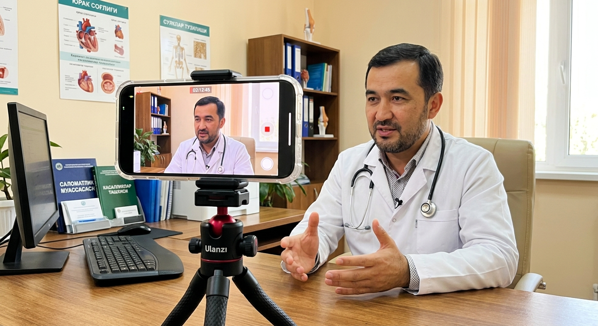

“Post chiqaramiz, lekin hech kim yozilmaydi.”
Postlar bor, ammo ularda bemorning savoliga javob va keyingi qadam yo‘q.
Bemor qabulga yozilishdan oldin Instagram sahifangizni ko‘rib chiqadi. Kerakli javobni topmasa, boshqa klinikani tanlaydi. Biz sahifangizni tahlil qilib, shu bo‘shliqlarni yopadigan post, video va veb-sahifa tayyorlaymiz.
Ko‘p klinikalarda uchraydigan holatlar. Bittasi sizniki bo‘lsa ham, sahifangiz bemor yo‘qotyapti.

Postlar bor, ammo ularda bemorning savoliga javob va keyingi qadam yo‘q.
Sahifada shifokor kimligi, tajribasi va nimani davolashi ko‘rsatilmagan.
Asosiy ma’lumot sahifada topilmaydi. So‘ramaganlar esa shunchaki ketadi.
Reja yo‘q, shuning uchun kontent vaqt bo‘lganda chiqadi.
Chiroyli rasm bor, lekin mazmun klinikangizga va bemorga mos emas.
Reklama odamni olib keladi, ishonchni esa sahifaning o‘zi uyg‘otishi kerak.
Klinika sahifasida xizmatlar, shifokorlar va bog‘lanish yo‘li aniq bo‘lsa, odamga keyingi qadamni tanlash osonlashadi.
Biz qanday yordam beramiz? ↘Post, reklama va veb-sahifa bir-biridan uzilib qolishi mumkin.
Biz — Tizimmedia jamoasimiz. Shifokorlaringiz va xizmatlaringizni tanishtiradigan postlar, qisqa videolar hamda klinika haqida alohida veb-sahifa yaratamiz.
Matn va g‘oyalarni tayyorlashda sun’iy intellektdan foydalanamiz. Tibbiy ma’lumotlarni esa e’lon qilishdan oldin sizning mutaxassisingiz tekshiradi.

Avval klinikangizni o‘rganamiz va Instagram sahifangizni tahlil qilamiz. Kontentni shu tahlilga qarab taklif qilamiz.

Klinikangiz, xizmatlaringiz va bemorlaringiz bilan tanishamiz.
SUHBAT · TUSHUNISHSahifangizda nima ishlayotgani va nima yetishmayotganini ko‘rib chiqamiz.
TAHLIL · XULOSATahlil natijalariga qarab, klinikangizga mos post va video mavzularini taklif qilamiz.
G‘OYA · REJAKelishilgan materialni tayyorlaymiz. Tibbiy ma’lumotni mutaxassisingiz ko‘rib chiqadi.
TAYYORLASH · TEKSHIRISHPostdagi tibbiy fikrlarni e’lon qilishdan oldin klinika mutaxassisi tasdiqlaydi.
G‘oya va matn tayyorlashda yordamchi vosita bo‘ladi. Yakuniy qarorni inson qiladi.
Ish uslubimizni ko‘rib, keyin davom etish haqida qaror qilasiz.
Shifokorlar, xizmatlar va klinika uslubini hisobga olib tayyorlaymiz.
Mavzular rejasi, muddatlar va tasdiqlash tartibi boshidan belgilanadi. Bu yondashuvni BTM’da o‘rganganmiz.
Tizimmedia asoschilari — Nurali va Malika. Har bir klinika bilan shaxsan o‘zimiz ishlaymiz.
Ishni tizim asosida yuritishni Biznesni Tizimlashtirish Markazida (BTM) o‘rganganmiz. Ustozlarimiz — Axrolxo‘ja Raxmatxo‘jayev, Nurali Sadikov va Dilshod Khamraev.
Quyidagilar namuna uchun tanlangan mavzular. Aniq mazmunini klinika mutaxassisi bilan kelishamiz.

Bemorlar ko‘p so‘raydigan savolga qisqa javob.
Shifokor tasdiqlagan tavsiyalarni sodda tushuntirish.
Manzil, qabul xonalari va jamoa bilan tanishtirish.
Klinikangizga mos 3 ta post va 2 ta video ssenariysini 5 ish kuni ichida tayyorlaymiz. Har oy faqat 3 ta klinikaga bepul namuna qilamiz.
klinikangizga mos tayyor namuna
Hajm va narxni klinikangiz bilan suhbatdan keyin kelishamiz.
Qaysi mavzuda va qanday post tayyorlashni oldindan rejalashtiramiz.
Shifokorlar va klinika xizmatlari haqida material tayyorlaymiz.
Xizmatlar, shifokorlar, manzil va bog‘lanish yo‘li bir joyda bo‘ladi.
Har oygi mavzular soni — 15–20 ta. Video va slaydli postlar sonini siz bilan alohida kelishib olamiz. Narx ham ish hajmiga qarab belgilanadi.
Taklif haqida qisqa javoblar.
Klinikangiz bilan tanishib, kelishilgan mavzular bo‘yicha 3 ta post va 2 ta video ssenariysini 5 ish kuni ichida tayyorlaymiz. Har oy faqat 3 ta klinikaga bepul namuna qilamiz.
Yo‘q. Namunalarni ko‘rib chiqasiz. Davom etish yoki to‘xtatish o‘zingizga bog‘liq.
Sun’iy intellekt g‘oya va matn tayyorlashda yordam beradi. Tibbiy ma’lumotni klinikangizdagi mutaxassis tekshiradi va tasdiqlaydi.
Yo‘q. Shifokor qatnashadigan yoki faqat klinika va xizmatlarni ko‘rsatadigan videolarni tanlash mumkin.
Avval klinikangiz bilan tanishamiz, kerakli ishlarni kelishamiz, keyin narx va muddatni aytamiz.
Ismingiz va klinika yo‘nalishini qoldiring. Bepul namunalarni qanday tayyorlashni kelishib olamiz.